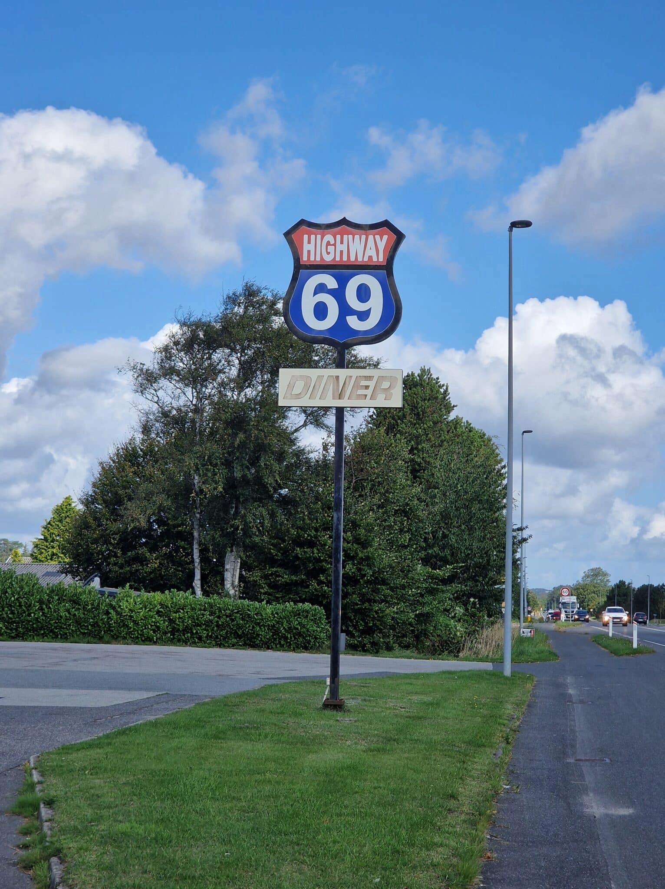
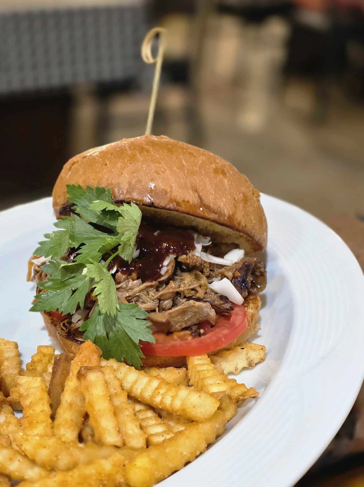

Hvorfor hedder vi Highway 69?
Navnet Highway 69 er inspireret af den ikoniske amerikanske rute 66 i USA, men med et unikt og lokalt præg, der afspejler vores rødder i Sæby. Vores adresse bærer nummer 69 – en detalje, der hurtigt blev en naturlig del af vores identitet. Vores vision er at bevise, præcis hvor fristende og veltilberedt amerikansk mad kan smage.
Vores koncept
Hos Highway 69 henter vi inspiration fra den klassiske amerikanske diner-kultur og bringer den til Nordjylland med vores eget lokale præg. Her kombinerer vi det uformelle og genkendelige med den rolige, nordjyske stemning, hvor der er plads til at slappe af og nyde et godt måltid.
For os handler det om at skabe et sted, hvor den amerikanske diner-stemning møder nordjysk nærvær – et sted, hvor gæsterne kan komme forbi til et måltid i afslappede omgivelser, uanset om det er med familien, vennerne eller som en del af en hyggelig aften ude

Stemningsfuld restaurant - der samler hele familien
Står du og din familie over for at vælge en familie restaurant, hvor både børn og voksne får en god oplevelse? Hos os får du en restaurant, der samler familien med retter fra det amerikanske køkken i rolige rammer. Du kan besøge os i vores søter restauranter i Skagen eller Hjørring, hvor vi ofte byder gæster fra Aalborg, Blokhus og omregn velkommen året rundt.
Som restaurant sørger vi får et udvalg, der fungerer for hele familien. vi arbejder med opskrifter og råvarer, der skaber solide retter, og følger en gennemrpøvet tilgang, hvor smag, variation og tempo i køkkenet er afstemt efter travle familiebesøg.
Lokationer
Besøg os i Sæby eller Skagen:
Sæby
- Frederikshavnsvej 69, 9300 Sæby
- Man - Tor: 16:00 - 21:00
Fre - Søn: 12:00 - 21:00
Skagen
- Havnevej 8, 9990 Skagen
- Man - Tor: 16:00 - 21:00
Fre - Søn: 12:00 - 21:00


FAQ
Som familie restaurant ved vi, at et godt besøg handler om andet end maden. Derfor indretter vi vores restauranter, så der er markeret god plads omkring bordene, og så det er nemt for familier at finde sig til rette. Vi har børnestole, børnemenuer og retter, der fungerer for både børn og voksne, og vi indretter restauranten med fokus på ro og plads.
Vi ønsker at imødekomme alle vores gæster så godt som muligt. Derfor har vi blandt andet en række glutenfrie alternativer eksempelvis burger og pizza. Derudover er vores hjemmelavet bearnise sovs, der er en fast del af gæsternes favoritter, ligeledes glutenfri. Derudover har vi en vegetar burger og vores pizzaer kan også laves vegetarisk, glutenfri mm. Hvis du har yderligere spørgsmål angående allergier, er du velkommen til at kontakte os inden dit besøg, eller spørge vres personale til råds..
Hos Highway 69 kombinerer vi amerikanske klassikere med familiefavoritter, så der er noget til enhver smag. Her kan i sammensætte jeres egne pizzaer, enten på en luftig italiensk bund eller en deepan bund, derudover kan i vælge mellem amerikanske burgere, steaks, salater og spareribs.
Vi har ingen begræsning på hvor lang tid man kan have et bord. Vi ønsker at alle gæster får en god oplevelse, dog kan man opleve at man kan blive spurgt om at rykke bord eller lignende, hvis nødvendigt.